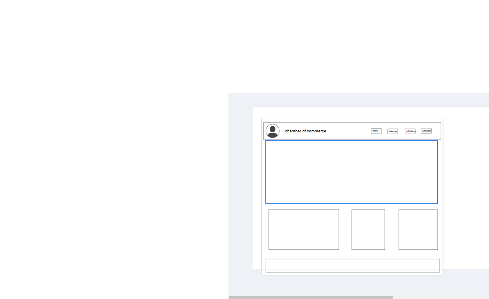

Site Plan for Chambers of Commerce
Site Name
Chambers of Commerce

Site Purpose
The site serves as a hub for local businesses, providing resources, networking opportunities, and community information.

Scenarios
1. How can I find local businesses and services in my area?
2. What events and networking opportunities are available for businesses in the community?

Color Schema
- Primary color: #2E4053 (navy blue)
    - Used for headings and accents
- Secondary color: #F7F7F7 (light gray)
    - Used for background and paragraphs

Typography
- Font family: Open Sans
    - Used for headings and body text
- Font sizes:
    - Headings: 24px
    - Body text: 18px

Wireframe
Mobile View


Desktop View

+---------------------------------------+
|          Header          |
+---------------------------------------+
|  Logo  |  Navigation  |  Search  |
+---------------------------------------+
|          Hero Image         |
+---------------------------------------+
|          Content          |
|  Sidebar  |
+---------------------------------------+
|          Footer          |
+---------------------------------------+


Features
1. Business Directory: A searchable directory of local businesses and services.
2. Events Calendar: A schedule of upcoming events, conferences, and networking opportunities.
3. Community News: A section for news, announcements, and updates from the local business community.
4. Resources: A collection of articles, videos, and podcasts on business development, marketing, and entrepreneurship.

Pages
1. Home: Introduction to the Chambers of Commerce, featuring a hero image and call-to-action buttons.
2. Business Directory: Searchable directory of local businesses and services.
3. Events: Schedule of upcoming events, conferences, and networking opportunities.
4. News: Section for news, announcements, and updates from the local business community.
5. Resources: Collection of articles, videos, and podcasts on business development, marketing, and entrepreneurship.
6. Contact: Contact form and information for getting in touch with the Chambers of Commerce.

JavaScript Functionality
1. Dynamic Content: Use JavaScript to dynamically generate content, such as event listings and business directory entries.
2. API Integration: Integrate with a public API to retrieve data on local businesses, events, and news.
3. Modal Dialogs: Use JavaScript to create modal dialogs for displaying additional information, such as business details and event summaries.